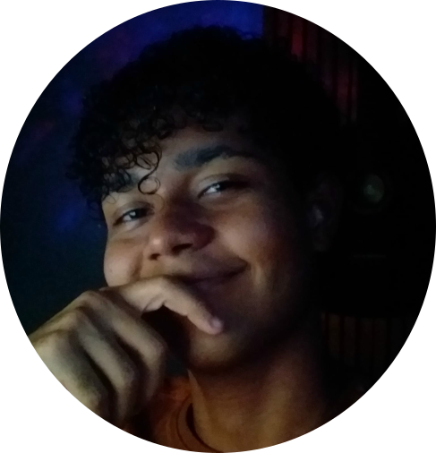

Bem-vindo ao meu portfólio!

Prazer, me chamo Guilhermy
Sou um estudante do curso de Ciência da Computação que adora ser desafiado de
diversas formas diferentes. Sou animado e comunicativo tanto quanto sou focado e
determinado.
Além da tecnologia, tenho também como paixões música e animais. Especialmente os
felinos.
Seria um prazer ter a honra de aprender mais com você e ajudar a resolver seus problemas nesse
mundo
tecnológico.